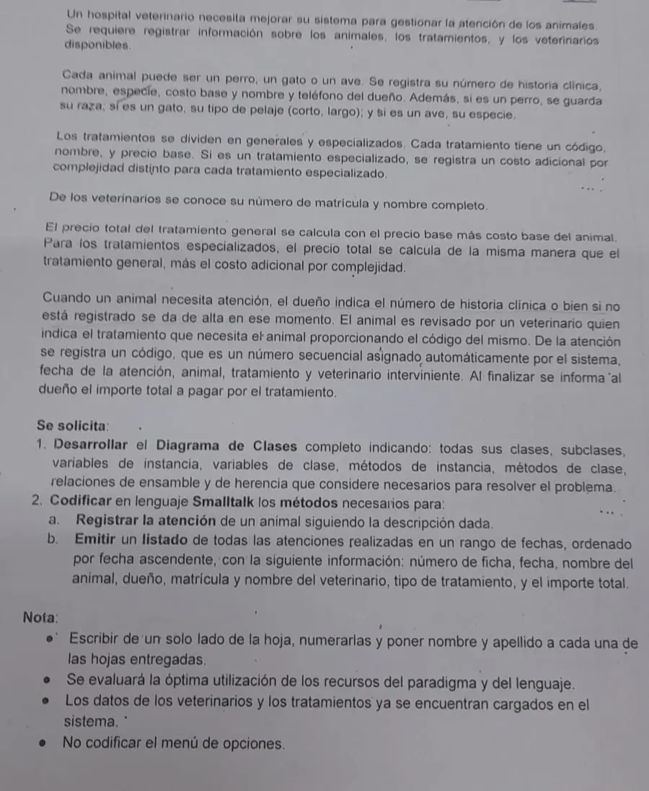

Aprobación directa, 07/11/2024 (Hospital veterinario)
Aprobación directa, 07/11/2024
Enunciado


Propuesta de respuesta
Respuesta no verificada. La propuso Luta Studios con inteligencia artificial y ningún docente la revisó. Puede tener errores.
1) Diagrama de clases
Hay dos jerarquías. Cada animal guarda un dato distinto según su tipo, y los tratamientos especializados suman un costo adicional. El costo adicional es distinto para cada tratamiento, y va en la instancia. El precio lo calcula el tratamiento con el costo base del animal que atiende. Cada caja tiene arriba las variables de clase (vc) y de instancia (vi), y abajo los métodos de clase (mc) y de instancia (mi), como los diagramas de los cuestionarios del campus. La flecha punteada va de la subclase a la superclase, y la línea con cantidad es un ensamble. Los métodos que solo devuelven una variable no van en las cajas, para que se lean. Están al final del código. Tocá el dibujo para verlo en pantalla completa.
2a) Registrar la atención de un animal
Hospital es la clase principal y guarda las colecciones, como la clase principal de los ejercicios resueltos. El animal se busca por su historia clínica. Si no está, se elige su tipo con el ciclo de «Elegir la subclase» y se da de alta. El tratamiento y el veterinario se piden hasta que existan. Al final se informa el importe.
"Hospital, métodos de instancia"
#inicializa
animales := OrderedCollection new.
tratamientos := OrderedCollection new.
veterinarios := OrderedCollection new.
atenciones := OrderedCollection new.
#registrarAtencion
| ani vet trat aten |
ani := self buscarOCrearAnimal.
vet := nil.
[vet isNil] whileTrue: [vet := self buscarVeterinario].
trat := nil.
[trat isNil] whileTrue: [trat := self buscarTratamiento].
aten := Atencion new.
aten cargaDatos: ani tratamiento: trat veterinario: vet.
atenciones add: aten.
MessageBox notify: 'Importe total a pagar: ', aten importe printString
#buscarOCrearAnimal
| hc ani |
hc := (Prompter prompt: 'Ingrese el número de historia clínica') asNumber.
ani := animales detect: [:unAnimal | unAnimal historia = hc] ifNone: [nil].
ani isNil ifTrue: [ani := self nuevoAnimal: hc].
^ani
#nuevoAnimal: unaHistoria
| tipo ani |
[ani isNil] whileTrue: [
tipo := Prompter prompt: 'Ingrese el tipo de animal (1) Perro, (2) Gato, (3) Ave'.
tipo = '1' ifTrue: [ani := Perro new].
tipo = '2' ifTrue: [ani := Gato new].
tipo = '3' ifTrue: [ani := Ave new]].
ani cargaDatos: unaHistoria.
animales add: ani.
^ani
#buscarVeterinario
| mat |
mat := (Prompter prompt: 'Ingrese la matrícula del veterinario') asNumber.
^veterinarios detect: [:unVet | unVet matricula = mat] ifNone: [nil]
#buscarTratamiento
| cod |
cod := (Prompter prompt: 'Ingrese el código del tratamiento') asNumber.
^tratamientos detect: [:unTrat | unTrat codigo = cod] ifNone: [nil]
"Animal, métodos de instancia"
#cargaDatos: unaHistoria
historia := unaHistoria.
nombre := Prompter prompt: 'Ingrese el nombre del animal'.
costoBase := (Prompter prompt: 'Ingrese el costo base') asNumber.
nombreDueno := Prompter prompt: 'Ingrese el nombre del dueño'.
telefonoDueno := Prompter prompt: 'Ingrese el teléfono del dueño'.
"Perro, métodos de instancia"
#cargaDatos: unaHistoria
super cargaDatos: unaHistoria.
raza := Prompter prompt: 'Ingrese la raza'.
"Gato, métodos de instancia"
#cargaDatos: unaHistoria
super cargaDatos: unaHistoria.
pelaje := Prompter prompt: 'Ingrese el tipo de pelaje (corto, largo)'.
"Ave, métodos de instancia"
#cargaDatos: unaHistoria
super cargaDatos: unaHistoria.
especie := Prompter prompt: 'Ingrese la especie'.
"Atencion, métodos de clase"
#asignaUltimoCodigo: unNumero
UltimoCodigo := unNumero
#incrementaUltimoCodigo
UltimoCodigo := UltimoCodigo + 1
"Atencion, métodos de instancia"
#cargaDatos: unAnimal tratamiento: unTratamiento veterinario: unVeterinario
Atencion incrementaUltimoCodigo.
codigo := UltimoCodigo.
fecha := Date today.
animal := unAnimal.
tratamiento := unTratamiento.
veterinario := unVeterinario.
#importe
^tratamiento precioPara: animal
"Tratamiento, métodos de instancia"
#precioPara: unAnimal
^precioBase + unAnimal costoBase
"Especializado, métodos de instancia"
#precioPara: unAnimal
^(super precioPara: unAnimal) + costoAdicional2b) Listado de atenciones por rango de fechas
Se ordena por fecha y después se filtra por el rango. Cada tratamiento responde tipo con su nombre.
"Hospital, métodos de instancia"
#listarAtenciones
| desde hasta lista |
desde := Date fromString: (Prompter prompt: 'Ingrese la fecha desde (dd/mm/aaaa)').
hasta := Date fromString: (Prompter prompt: 'Ingrese la fecha hasta (dd/mm/aaaa)').
lista := (atenciones asSortedCollection: [:a :b | a fecha < b fecha])
select: [:unaAten | unaAten fechaEntre: desde y: hasta].
lista isEmpty
ifTrue: [MessageBox notify: 'No se han encontrado atenciones en ese período']
ifFalse: [
Transcript clear;
show: 'Ficha'; tab; show: 'Fecha'; tab; show: 'Animal'; tab; show: 'Dueño'; tab;
show: 'Matrícula'; tab; show: 'Veterinario'; tab; show: 'Tratamiento'; tab; show: 'Importe'; cr.
lista do: [:unaAten | unaAten mostrarEnListado]]
"Atencion, métodos de instancia"
#fechaEntre: desde y: hasta
^(fecha >= desde) and: [fecha <= hasta]
#mostrarEnListado
Transcript show: animal historia printString; tab;
show: fecha printString; tab;
show: animal nombre; tab;
show: animal nombreDueno; tab;
show: veterinario matricula printString; tab;
show: veterinario nombreCompleto; tab;
show: tratamiento tipo; tab;
show: self importe printString; cr
"General, métodos de instancia"
#tipo
^'General'
"Especializado, métodos de instancia"
#tipo
^'Especializado'Métodos que devuelven datos
"Atencion, métodos de instancia"
#fecha
^fecha
"Veterinario, métodos de instancia"
#matricula
^matricula
#nombreCompleto
^nombreCompleto
"Animal, métodos de instancia"
#historia
^historia
#nombre
^nombre
#costoBase
^costoBase
#nombreDueno
^nombreDueno
"Tratamiento, métodos de instancia"
#codigo
^codigoRespuesta no verificada. Puede tener errores.
Se armó con las páginas de Aprobación directa («Cómo leer la narrativa» y «Qué lleva el diagrama») y de Final («Las plantillas del Drive» y «Cómo se arma el programa»), que salen de «Estructuras útiles en Smalltalk» y de los Ejercicios resueltos 1 a 3 de Material Util.
Quedó en duda: El material no muestra cómo filtrar entre dos fechas. Acá se compara con >= y <= en fechaEntre:y:. La hoja nombra la especie entre los datos de todos los animales y otra vez como dato propio del ave. Acá la especie es solo del ave, y en perro y gato la dice la subclase. La consigna pide un «número de ficha» que la hoja no define. Acá es el número de historia clínica del animal. Otra lectura es el código de la atención. Tampoco dice cómo se elige el veterinario. Acá se ingresa su matrícula, porque los veterinarios ya están cargados. Se supone que las variables de clase ya tienen su valor, cargado con los métodos de clase asigna.... El código no se corrió en un Smalltalk real.
¿Cómo te fue?
Marcá cada tema del examen.
- Diagrama de clasesMétodos de clase y de instancia, en Parcial de regularización
- SmalltalkQué se tomó, en Parcial de regularización